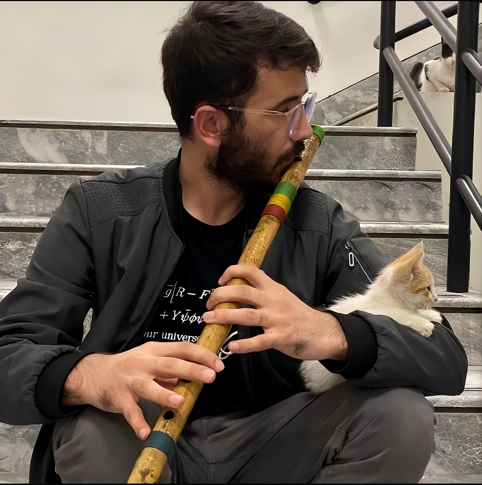

Mathematics student at the International Centre for Theoretical Physics (ICTP), interested in topology, geometry, algebra, and mathematical research.
Trieste, Italy
I love mathematics, music, and cats.
I am currently pursuing a Postgraduate Diploma in Mathematics at the International Centre for Theoretical Physics (ICTP), Trieste, Italy.
My interests lie in pure mathematics, particularly topology, geometry, algebra, and their connections with mathematical physics.
Topology · Geometry · Algebra · Discrete Morse Theory · Mathematical Physics
munawarhamiya8 [at] gmail [dot] com
Trieste, Italy